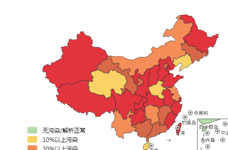
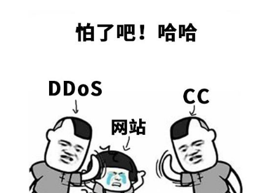

村长在做偏门屋之前，就关注过很多网赚博客，像紫菜头博客、小无聊博客，这些网赚博客都是5年以上的老站了，但是，2020年下半年的时候，这两个博客打不开了，为什么好端端的停了？
2020年是动荡的一年，无论是线下和线上都受影响了。
上半年是线下，大部分商家受了严重的影响，尤其是餐饮、ktv等聚会的地方，下半年以后，好多了。
下半年是线上受影响，尤其是seo网赚站点，90%的网赚站点受影响，轻者受DDOS+cc攻击，重者直接域名污染，

说一下两者危害:
DDOS+cc攻击，买了防御或者对方不攻击了，自然解除，无非就是花点钱。
域名污染，基本是就没救了，只能换域名，重新做站，原来的权重和排名，相当于毁于一旦。
小无聊博客和紫菜头博客为什么停了？
我们先说紫菜头博客，它之所以停了，是因为域名污染，大家看下面的截图：所以，紫菜头博客，没有救了。而小无聊博客小没有被污染，它为什么停了呢？
村长认为，三个原因：第一：DDOS+cc攻击，第二：盈利方向，第三：其他更赚钱项目。

村长认为是第一个原因多一些，如果村长没有记错的话，小无聊博客，差不多有8年了，以前村长说过紫菜头博客一年单纯的挂广告位，一年也能赚十万、八万的。
其实，已经很不错了，如果你还上着班，一年肯定能赚20、30万，如果在2、3线城市，村长感觉已经很了不起了，因为，目前，我们石家庄50%的人工资在3000左右。
而小无聊博客可能是被攻击了，或者只是玩玩而已，不为赚钱，就像它的名字小无聊。
但是，只要大家都是平凡人，都是为了赚钱而活的。
反正，目前，小无聊博客和紫菜头博客已经都关闭了，紫菜头博客希望大，小无聊博客其实还是可以继续运营的。
说了小无聊博客和紫菜头博客，村长再说一下目前偏门屋状态，也被折腾的够呛，盈利也不多，总之，90%的网赚博客都受影响，而且盈利大减。
不管怎么说，都是疫情闹的，石家庄是在2020年年底和2021年初发生的，目前石家庄基本上已经控制了，过完年没有什么问题，基本上可以恢复生产，也能复工。
但是，想彻底恢复，估计又下半年了，大家坚持住吧，总之，坚持住，一切都好说。